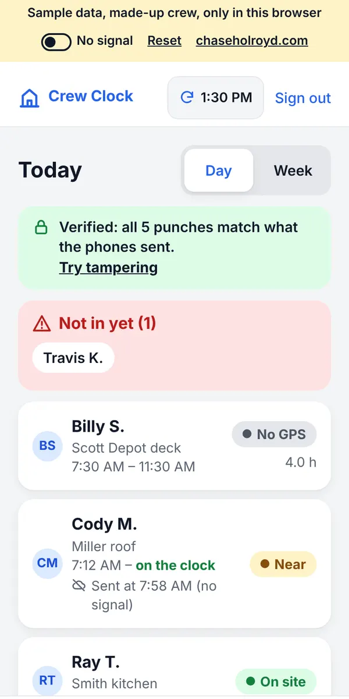

Field app · live demo
Crew Clock
A small rural crew tracked hours on paper and memory, on cheap phones with weak signal, so pay disputes came down to whose story you believed. Crew Clock makes every punch a record both sides can trust.

3 tapsto clock in, even with no signal
Signedevery punch, checked in the boss's browser
Fairthe geofence flags a punch, never blocks it
$0a month to run
Who uses it
- The crew clocks in with three taps on the phones they already own. With no signal, the punch is saved on the phone and sent later.
- The boss checks a map and a Today list: who is on the clock, where, and who isn't in yet. The weekly timesheet comes out in one tap.
Product decisions
- Offline first. Job sites often have one bar or none, so a punch never waits on the network.
- Trust over surveillance. Location is read at the punch, not all day, and each worker agrees to it once in plain words.
- Tamper-evident. Each punch is signed on the phone and checked in the boss's browser, so a changed time shows up in red.
- No new cost. It runs on free tiers, because a small crew won't pay for another subscription.
Status
The demo runs the real app on a made-up crew. A two-week beta with a five-person crew is next.
The demo uses a made-up crew and job sites, and it never asks for your real location unless you turn that on. Everything stays in your browser.